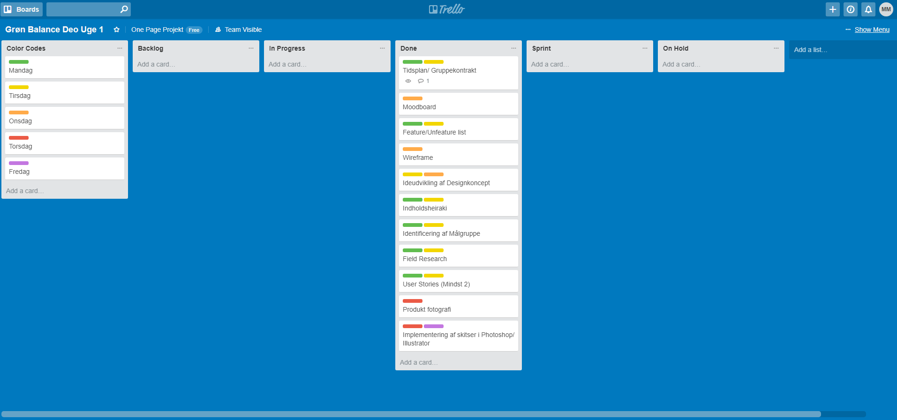

I uge 47 og 48 i 2017 udarbejdede vi et One Page projekt, med udgangspunkt i et fysisk produkt vi havde fået udleveret. Ud fra produktet skulle en one-page website udarbejdes, med et selvvalgt formål.
Jeg fik udleveret en Roll-on Deodorant fra Grøn Balance, som er et miljø venligt mærke med fokus på Svanemærket og Astma-Allergi mærket.
Den færdige One-Page kan findes her:
Grøn Balance - Roll-on Deodorant
Til projektstyring anvendte jeg Trello, som er er online SCRUM værktøj
Med Trello oprettede jeg almindelige SCRUM værdier og satte punkter og faser op i farvekodnig til forskellige dage, og dermed et fast skema over hvad jeg skulle nå igennem projektdagene.
Under etableringsfasen gjorde jeg det klart hvilken målgruppe jeg arbejdede med og hvilke faktorer om produktet som jeg umiddelbart kunne have fastlagt til at begynde med.
For at videre udviklke på den konkrete information jeg havde foretagede jeg field-research, som hjalp mig til at bedre forstå målgruppen, og hvilke typer af kunder som produktet havde.
Jeg foretagede interviews inden for den fastlagte målgruppe, som var vurderet til at være børnefamilier, med forældre imellem 25-30 år, med lidt variation.
Jeg spurgte ind til målgruppens egne preferencer inden for deodorant, og hvilke holdninger de har til Astma-Allergi og Svanemærket i deres produkter.
Et eksempel på et interview besvarelse:
Kilde: One Page Projekt - Grøn Balance Deo (Maiken Sparre Ry Mikkelsen)
I begyndelsen af idéudviklingen startede jeg af med at lave en Feature/Unfeature liste, for at få en overordnet idé om hvilket indhold jeg kunne tænke mig at have på siden.
Ud fra Feature/Unfeature lavede jeg et seperat liste over ideér, som passede ind med de features jeg havde besluttet mig for, og oprettet et indholdsheiraki.
Moodboard og Wireframes blev lavet som afsluttende arbejde inden jeg overgik til at arbejde på selve sidens kode i uge 48.
Siden blev udviklet ud fra moodboard, wireframes og indholdsheirakiet, med udgangspunkt i CSS Grids, og uden anvendelse af JavaScript for at holde designet simpelt og kommunikere produktet, frem for hjemmesidens aktuelle funktionalitet.
Funktioner som krævede JavaScript blev markeret som demonstrative.
I begyndelsen lavede jeg et skelet i HTML og CSS, som var rå CSS Grids, Headeren lagde uden for Grids, for at sørge få at den beholdte den samme position på skærmen på tværs af alle platformer.
Siden var opsat med basisk navigation, da siden var visualiseret som en underside på en større side.
Siden var bygget responsiv til 3 skærmstørrelser, henholdsvis: Desktop, Tablet og Mobil, og bygget ud fra Mobile-First princippet.
I refleksion over projektet, ville jeg mene at det færdige produkt blev som forventet, og forløbet havde været et lærerige par uger, hvor jeg lærte langt mere om CSS og HTML, og byggede videre på min forståelse for SCRUM fra Design-Thinking projektet.
I første uge af forløbet var jeg inddelt i gruppe, som kunne have haft bedre funktion ved strammere tilgang til gruppekontrakten og arbejdsdisciplin fra begge parter.
Ved tilbagevendelse til den færdige One-Page kan jeg mærke at jeg siden har forbedret mig på min overordnede forståelse for kode, og at hvis jeg opdaterede min side, ville kunne rette mine fejl og mangler.
Sara Middelhede (Uge 47)
Maiken Sparre Ry Mikkelsen